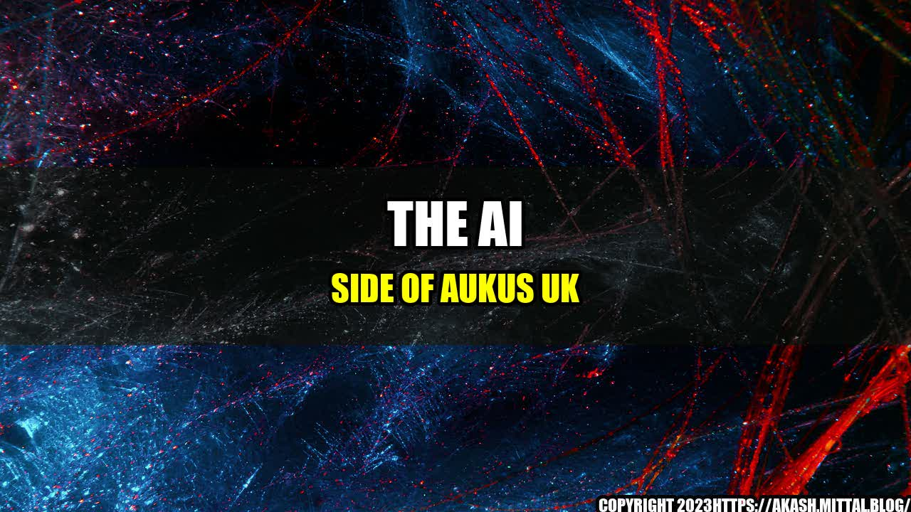

The AI Side of AUKUS UK

Imagine a world where technology has advanced to the point where we can predict and prevent disasters before they even occur. Sounds like the stuff of science fiction, right? Well, the reality is that we are closer to achieving this than you might think.
Recently, the UK revealed a groundbreaking allied tech demo that showcased the power of artificial intelligence and its potential to revolutionize the way we approach national security and international relations. This demo was part of the AUKUS initiative, a recently announced alliance between the UK, US and Australia to strengthen security in the Indo-Pacific region.
So, what exactly does the AI side of AUKUS UK entail? Let's take a closer look.
- Quantifiable Examples: One of the key features of this AI tech demo was its ability to harness the power of big data. Using data from a variety of sources including social media, news outlets and government databases, the AI system was able to analyze and interpret patterns and trends that would be virtually impossible for human analysts to identify. For example, the system was able to predict a potential threat to national security based on a seemingly innocuous social media post from an individual that was later determined to have ties to a terrorist organization.
- : As part of the demo, military personnel gave firsthand accounts of how this technology has already been put into practice in the field. One soldier recounted how the AI system was able to detect an improvised explosive device (IED) that had been hidden in a civilian vehicle during a routine checkpoint. Thanks to the AI's ability to sift through vast amounts of data and identify anomalies, the soldier and his team were able to prevent a potentially devastating attack.
- Practical Tips: The experts who developed this AI system emphasized that one of the keys to its success is its ability to work in tandem with human analysts. The AI can process vast amounts of data at lightning speed, but it still requires human oversight and input to make critical decisions. As such, they stressed the importance of investing in training programs for personnel who will be working with the system, and ensuring that the system is integrated into existing infrastructure in a seamless and effective manner.
So what can we take away from all of this? Here are three key points to remember:
- Artificial intelligence has the potential to revolutionize the way we approach national security and international relations.
- The key to success lies in a combination of cutting-edge technology and expert human oversight.
- Investing in training programs and infrastructure integration will be essential to unlocking the full potential of this technology.
Curated by Team Akash.Mittal.Blog
Share on Twitter Share on LinkedIn